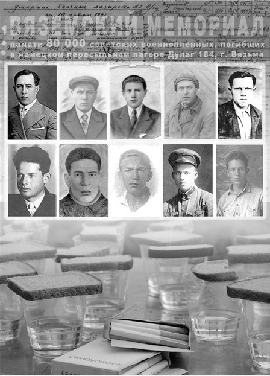

Военнопленные и гражданские лица, погибшие в дулаге 184 (Вязьма)
(Окончание. Начало на странице 5.)
ЗАРУБИН Николай Филиппович родился в 1896 г. в дер. Рязаново Тургиновского с/с Калининского р-на. Погиб в дулаге № 184 23 февраля 1942 г.
КИРЬЯНОВ Николай Алексеевич родился в 1902 г. в дер. Шутово Медновского с/с Калининского р-на. Погиб в дулаге № 184 12 марта 1942 г.
КОРОЛЕВ Андрей Васильевич родился в 1912 г. в дер. Лисицы Оршинского с/с Калининского р-на. Погиб в дулаге № 184 14 марта 1942 г.
РАЗИН Иван Семенович родился в 1923 г. в дер. Головино Оршинского с/с Калининского р-на. Погиб в дулаге № 184 23 августа 1942 г.
Калязинский район
КУРАКИН Иван Иванович родился в 1919 г., г. Калязин, ул. Б. Гражданская, 38/15. Погиб в дулаге № 184 7 января 1942 г.
МУХИН Василий Ефимович родился в 1894 г. в дер. Сендрюхово Нерльского с/с Калязинского р-на. Погиб в дулаге № 184 29 августа 1942 г.
СУДАКОВ Василий Федорович родился в 1910 г. в дер. Лыткино Нерльского с/с Калязинского р-на. Погиб в дулаге № 184 1 февраля 1942 г.
Кашинский район
ДАВЫДОВ Владимир Васильевич родился в 1922 г. в дер. Литвиново Славковского с/с Кашинского р-на. Погиб в дулаге № 184 4 февраля 1942 г.
ЗИНОВЬЕВ Михаил Кириллович родился в 1899 г. в дер. Отрубнево Верхнетроицкого с/с Кашинского р-на. Погиб в дулаге № 184 12 августа 1942 г.
РЕДЬКИН Александр Михайлович родился в 1911 г. в дер. Подберезье Пестриковского с/с Кашинского района. Погиб в дулаге № 184 24 марта 1942 г. Внесен в списки захороненных братской могилы в дер. Митьково Вяземского района Смоленской области с датой гибели 18 февраля 1942 г.
УШАКОВ Семен Васильевич родился в 1908 г. в дер. Малечкино Барыковского с/с Кашинского р-на. Погиб в дулаге № 184 18 января 1942 г.
ШЛЮЕВ Петр Алексеевич родился в 1899 г. в дер. Проскудницино Фарафоновского с/с Кашинского р-на. Погиб в дулаге № 184 12 января 1942 г.
Кимрский район
КРУГЛОВ Георгий Сергеевич родился в 1911 г., г. Кимры. Погиб в дулаге № 184 9 января 1942 г.
ОРЕХОВ Александр Михайлович родился в 1922 г. в дер. Якшино Гайновского с/с Кимрского р-на. Погиб в дулаге № 184 14 января 1942 г.
СОЛОВЬЕВ Иван Петрович родился в 1905 г. в дер. Веска Красновскго сельсовета Кимрского р-на. Погиб в дулаге № 184 18 марта 1942 г.
ТУЛЬНОВ Николай Иванович родился в 1922 г. в дер. Гайново Гайновского сельсовета Кимрского р-на. Погиб в дулаге № 184 28 января 1942 г.
УДАЧИН Александр Егорович родился в 1922 г. в дер. Берниково Сменского с/с Кимрского р-на. Погиб в дулаге № 184 31 января 1942 г.
ХРЕНОВ Александр Сергеевич родился в 1912 г. в г. Москве. Довоенный адрес: г. Кимры, ул. Чичерина, д. 20. Погиб в дулаге № 184 24 января 1942 г.
Конаковский район
БОЙКОВ Василий Степанович родился в 1896 г. в дер. Холменка Завидовского с/с Конаковского р-на. Погиб в дулаге № 184 22 августа 1942 г.
ГОЛЯКОВ Петр Арсеньевич родился в 1922 г., г. Конаково. Погиб в дулаге № 184 30 марта 1942 г.
ДАНИЛИН Петр Михайлович родился в 1917 г. в дер. Быстрово Ручьевского с/с Конаковского р-на. Погиб в дулаге № 184 6 января 1942 г.
ЛИВАГИН Владимир Дмитриевич родился в 1910 г., г. Конаково, ул. Революции, 22. Старший лейтенант, 903 сп 242 сд. Погиб в дулаге № 184 18 марта 1942 г.
МОРОЗОВ Александр Николаевич родился в 1905 г., г. Конаково, ул. Красногвардейская, д. 7/19. Погиб в дулаге № 184 3 августа 1942 г.
РУСАКОВ Дмитрий Кириллович родился в в 1901 г. в дер. Первомайск Конаковского р-на. Погиб в дулаге № 184 25 января 1942 г.
ТАРАСОВ Василий Иванович родился в 1900 г. в пос. Новозавидовский Конаковского р-на. Погиб в дулаге № 184 11 сентября 1942 г.
ЦВЕТКОВА Елена Сергеевна родилась в 1896 г. в дер. Шуклово Вахонинского с/с Конаковского р-на. Погибла в дулаге № 184 30 сентября 1942 г.
Краснохолмский район
СЕРГЕЕВ Александр Васильевич родился в 1919 г. в дер. Петелино Скоросовского с/с Краснохолмского р-на. Погиб в дулаге № 184 26 июля 1942 г.
Кувшиновский район
ЕГОРОВ Иосиф Павлович родился в 1914 г. в дер. Поповиха Кувшиновского р-на. Погиб дулаге № 184 19 сентября 1942 г.
ШУТОВ Василий Григорьевич родился в 1899 г. в дер. Тарасково Кувшиновского р-на. Погиб в дулаге № 184 23 августа 1942 г.
Лихославльский район
ГОРСКИЙ Александр Михайлович родился в 1911 г., г. Лихославль, ул. Октябрьская, д. 16/10. Погиб в дулаге № 184 3 марта 1942 г.
ИЛЬИН Иван Степанович родился в 1899 г. в дер. Комариха Горковского с/с Лихославльского р-на. Погиб в дулаге № 184 12 августа 1942 г.
ПОЛЯКОВ Степан Михайлович родился в 1894 г. в дер. Высочка Стешковского с/с Лихославльского р-на. Погиб в дулаге № 184 11 марта 1942 г.
СОРОКИН Михаил Иванович родился в 1907 г. в дер. Залазино Лихославльского р-на. Погиб в дулаге № 184 14 января 1942 г.
Максатихинский район
ИВАНОВ Федор Иванович родился в 1908 г., Максатихинский р-н, Селецкий с/с. Погиб в дулаге № 184 15 января 1942 г.
КОЗЛОВ Александр Михайлович родился в 1899 г. в дер. Лунтиха Ключевского с/с Максатихинского р-на. Погиб в дулаге № 184 3 сентября 1942 г.
КОЛЬЦОВ Григорий Семенович родился в 1906 г. в дер. Горшково Селецкого с/с Максатихинского р-на. Погиб в дулаге № 184 9 января 1942 г.
Молоковский район
ГОРШКОВ Михаил Павлович родился в 1914 г. в дер. Щекино Делединского с/с Молоковского р-на. Погиб в дулаге № 184 14 марта 1942 г.
ФЕДУЛОВ Иван Егорович родился в 1922 г. в дер. Борис-Глеб Молоковского с/с Молоковского р-на. Погиб в дулаге № 184 23 января 1942 г.
Нелидовский район
БОДРЕНКОВ Александр Ильич родился в 1925 г. в дер. Семики Нелидовского р-на. Погиб в дулаге № 184 23 августа 1942 г.
ВАСИЛЬЕВ Василий Васильевич родился в 1925 г. в дер. Земцы Ущанского с/с Нелидовского р-на. Гражданский. Погиб в дулаге № 184 1 сентября 1942 г.
ЛЕБЕДЕВ Александр Федорович родился в 1907 г. в Цыгановка Заборского с/с Нелидовского р-на. Погиб в дулаге № 184 10 марта 1942 г.
МЕЛЕШКИН Иван Васильевич родился в 1925 в дер. Клютиково Монинского с/с Нелидовского р-на. Погиб в дулаге № 184 7 октября 1942 г.
СОЛОВЬЕВ Владимир Николаевич родился в 1925 г. в дер. Земцы Ущанского с/с Нелидовского р-на. Гражданский. Погиб в дулаге № 184 1 сентября 1942 г.
СУДАРИКОВ Александр Алексеевич родился в 1925 г. в дер. Прудня Пруднянского с/с Нелидовского р-на. Погиб в дулаге № 184 29 сентября 1942 г.
Оленинский район
ГЕРАСИМОВ Иван Семенович родился в 1898 г. в дер. Александровка Оленинского р-на. Погиб в дулаге № 184 8 сентября 1942 г.
КРЫЛОВ Дмитрий Фомич родился в 1913 г. в дер. Безобразово Оленинского р-на. Погиб в дулаге № 184 23 февраля 1942 г.
ЛАЗАРЕВ Егор Николаевич родился в 1892 г. в дер. Устинка Завидовского с/с Оленинского р-на. Погиб в дулаге № 184 14 сентября 1942 г.
ОВЧИННИКОВ Виталий Семенович родился в 1912 г. в дер. Раменка Оленинского р-на. Погиб в дулаге № 184 7 августа 1942 г.
СИТКИН Александр Петрович родился в 1898 г. в дер. Савицкие Оленинского р-на. Погиб в дулаге № 184 23 марта 1942 г.
Осташковский район
ЦВЕТКОВ Федор Никонорович родился в 1914 г. в дер. Городок Бельковского с/с Осташковского р-на. Погиб в дулаге № 184 6 февраля 1942 г.
Рамешковский район
ПАТРИКЕЕВ Николай Иванович родился в 1909 г. в дер. Сырково Никольского с/с Рамешковского р-на. Погиб в дулаге № 184 24 сентября 1942 г.
Ржевский район
ДАРЬЯНОВА Елена Васильевна родилась в 1902 г., г. Ржев, ул. Пригородная, д. 7. Погибла в дулаге № 184 24 сентября 1942 г.
КОРОЛЬКОВ Петр Иванович родился в 1914 г. в дер. Грешниково Петуновского с/с Ржевского р-на. Погиб в дулаге № 184 10 января 1942 г.
КУКУШКИН Василий Михайлович родился в 1908 г. в Ржевском р-на. Гражданский. Погиб в дулаге № 184 23 марта 1942 г.
МАГНИЦКИЙ Павел Владимирович родился в 1898 г., г. Ржев, ул. Калинина, д. 6. Погиб в дулаге № 184 30 февраля 1942 г.
МАКИН Александр Никитович родился в 1922 г. в дер. Митьково Ржевского р-на. Погиб в дулаге № 184 30 сентября 1942 г.
МИХАЙЛОВ Георгий Матвеевич родился в 1915 г., г. Ржев, казарма 235. Служил в железнодорожном полку. Погиб в дулаге № 184 23 марта 1942 г.
СЕДОВА Александра Егоровна родилась в 1891 г., г. Ржев, ул. Бехтерева, д. 35. Погибла в дулаге № 184 8 октября 1942 г.
ТИХОМИРОВ Александр Яковлевич родился в 1907 г., г. Ржев, пос. льночесальной фабрики. Погиб в дулаге № 184 16 сентября 1942 г.
Селижаровский район
БУЧНЕВ Петр Григорьевич родился в 1923 г. в дер. Подмошье Березугского с/с Селижаровского р-на. Погиб в дулаге № 184 2 сентября 1942 г.
ГОЛУБЕВ Иван Дмитриевич родился в 1904 г. в дер. Кулаково Селижаровского с/с Селижаровского р-на. Погиб в дулаге № 184 23 марта 1942 г.
ЛОГИНОВ Иван Григорьевич родился в 1912 г., колхоз Свобода Селижаровского р-на. Погиб в дулаге № 184 4 марта 1942 г.
МЕЛЬНИКОВ Николай Николаевич родился в 1919 г. в дер. Заречье Рытовского с/с Селижаровского р-на. Погиб в дулаге № 184 29 января 1942 г.
ПОЛЯКОВ Александр Иванович родился в 1907 г. в дер. Кошелево Хотошинского с/с Селижаровского р-на. Погиб в дулаге № 184 2 января 1942 г.
ПУТИН Михаил Васильевич родился в 1918 г. в дер. Волжанка Волжанского с/с Селижаровского р-на. Погиб в дулаге № 184 22 августа 1942 г.
СУЛИМОВ Владимир Павлович родился в 1922 г. в дер. Ельцы Елецкого с/с Селижаровского р-на. Погиб в дулаге № 184 11 сентября 1942 г.
ТИХОМИРОВ Дмитрий Степанович родился в 1902 г. в дер. Юшино Молотовского с/с Селижаровского р-на. Погиб в дулаге № 184 2 января 1942 г.
ТРОФИМОВ Александр Иванович родился в 1907 г. в дер. В. Горки Будаевского с/с Селижаровского р-на. Погиб в дулаге № 184 26 марта 1942 г.
Спировский район
СМИРНОВ Алексей Федорович родился в 1915 г. в дер. Вешки Выдропужского с/с Спировского р-на. Погиб в дулаге № 184 17 июля 1942 г.
Старицкий район
АНДРЕЕВ Александр Никифорович родился в 1915 г. в дер. Михайлово Черниговского с/с Старицкого р-на. Младший лейтенант, 919 стрелковый полк. Погиб в дулаге № 184 24 января 1942 г.
АФАНАСЬЕВ Михаил Алексеевич родился в 1921 г. в дер. Никольское Луковниковского с/с Старицкого р-на. Погиб в дулаге № 184 28 февраля 1942 г.
ГУСЕВ Николай Степанович родился в 1909 г. в дер. Спасс Юрьевского с/с Старицкого р-на. Погиб в дулаге № 184 7 февраля 1942 г.
БУЛКИН Александр Степанович родился в 1897 г. в дер. Бобынино Старицкого р-на. Погиб в дулаге № 184 19 августа 1942 г.
ДЕМЕНТЬЕВ Алексей Иванович родился в 1921 г. в дер. Свистуново Юрьевского с/с Старицкого р-на. Погиб в дулаге № 184 9 февраля 1942 г.
ЕРМАКОВ Василий Иванович родился в 1903 г. в дер. Каменка Луковниковского с/с Старицкого р-на. Погиб в дулаге № 184 24 августа 1942 г.
ЗИНОВЬЕВ Николай Александрович родился в 1907 г. в Старицком р-не. Гражданский. Погиб в дулаге № 184 15 августа 1942 г.
ЛУЖНИКОВ Иван Петрович родился в 1918 г. в дер. Коньково Коньковского с/с Старицкого р-на. Погиб в дулаге № 184 14 марта 1942 г.
ТЕЛЕЖКИН Павел Ефимович родился в 1902 г. в дер. Антоново Свердловского с/с Старицкого р-на. Погиб в дулаге № 184 19 сентября 1942 г.
ТЕЛЕЖКИН Павел Филиппович родился в 1919 г. в дер. Антониха Денежновского с/с Старицкого р-на. Погиб в дулаге № 184 2 октября 1942 г.
ЧУДОВ Александр Михайлович родился в 1903 г. в дер. Тредубье Тредубского с/с Старицкого р-на. Погиб в дулаге № 184 22 марта 1942 г.
Торжокский район
БАБАЦИНСКИЙ Сергей Алексеевич родился в 1919 г., г. Торжок. Погиб в дулаге № 184 13 марта 1942 г.
ЕМЕЛЬЯНОВ Дмитрий Иванович родился в 1901 г. в дер. Пудышево Горского с/с Торжокского р-на. Погиб в дулаге № 184 29 августа 1942 г.
ИППОЛИТОВ Николай Ипполитович родился в 1900 г. в дер. Пятница Плот Никольского с/с Торжокского р-на. Погиб в дулаге № 184 11 августа 1942 г.
КУЗЬМИН Петр Иванович родился в 1896 г. в дер. Костино Пироговского с/с Торжокского р-на. Погиб в дулаге № 184 1 февраля 1942 г.
ПАНАРИН Захар Федорович родился в 1924 г. в дер. Куклино. Б. Вишенского с/с Торжокского р-на. Погиб в дулаге № 184 26 июля 1942 г.
ПОНОМАРЕВ Иван Гаврилович родился в 1896 г. в дер. Д. Троица Большесвятцовского с/с Торжокского р-на. Погиб в дулаге № 184 26 сентября 1942 г.
РОДИОНОВ Иван Ефремович родился в 1923 г., г. Торжок. Погиб в дулаге № 184 30 июля 1942 г. Похоронен: г.Вязьма, Екатерининское кладбище, братская могила № 2.
ТЕТЕРИН Василий Алексеевич родился в 1905 г. в дер. Голенищево Грузинского с/с Торжокского р-на. Погиб в дулаге № 184 16 марта 1942 г.
ЧУКЕБИНИН Георгий Павлович родился в 1925 г. в дер. Петрово Большепетровского с/с Торжокского р-на. Погиб в дулаге № 184 18 сентября 1942 г.
Удомельский район
ВОРОНОВ Федор Егорович родился в 1896 г. в пос. Брусово Удомельского р-на. Погиб в дулаге № 184 6 марта 1942 г.
НАЗАРОВ Тимофей Павлович родился в 1919 г. в дер. Иваньково Быковского с/с Удомельского р-на. Погиб в дулаге № 184 10 января 1942 г.
ЕГОРОВ Егор Федорович родился в 1915 г. в дер. Репно Удомельского р-на. Погиб в дулаге № 184 1 февраля 1942 г.
НИКИФОРОВ Алексей Петрович родился в 1921 г. в дер. Матренино Удомельского р-на. Погиб в дулаге № 184 7 февраля 1942 г.
Фировский район
ВАСИЛЬЕВ Александр Васильевич родился в 1898 г. в дер. Тонище Яхновского с/с Фировского р-на. Погиб в дулаге № 184 23 января 1942 г.
УДАЛОВ Борис Николаевич родился в 1920 г. в дер. Жабны Фировского р-на. Погиб в дулаге № 184 21 февраля 1942 г.
|